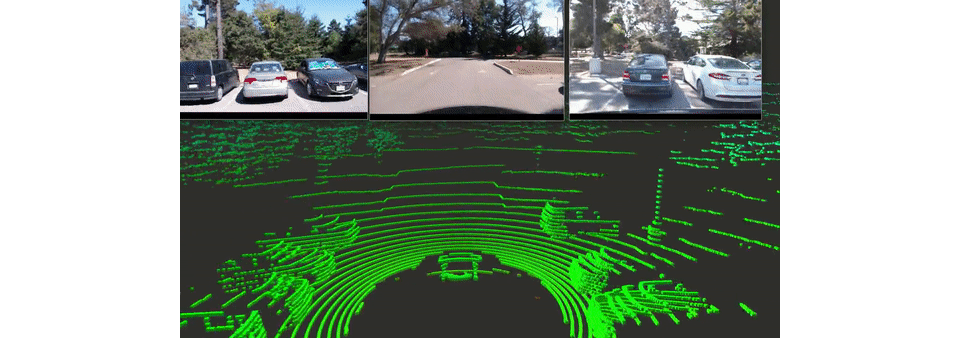
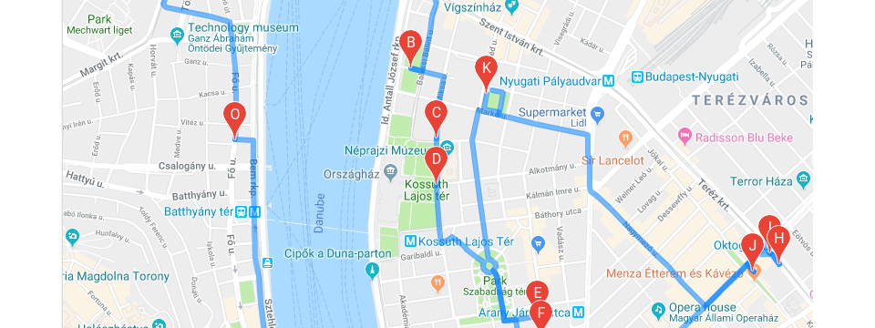

Verifiable Deep Learning
- Robust Deep Neural Networks
- Will your autonomous car detect a truck or merely a butterfly?
- Can learning-based AI guarantee safety-critical behavior?
- In particular, can we build adversarially robust DNN-s?
- Verification of Deep Learning Systems
- How can we verify robustness in all possible - foreseen and unforeseen - circumstances?
- How do we get mathematical guarantees about our system?
- Which performance indicators can we use when absolute guarantees are not available?
- Interpretable Specifications
- In order to verify any system, we need specifications to verfy against.
- How can we define a functional specification for a vision task?
- How can we make the specification both human-interpreatable and meaningful?
Publications
- Towards Verifiable Specifications for Neural Networks in Autonomous Driving (IEEE CINTI 2019)
- Adversarial Attacks
- Would you trust an AI system that is nearly always right, but nearly always for the wrong reasons?
- Does nature produce unusual inputs that confuse deep learning systems?
- Can layman attackers exploit the inherent adversarial weakness of deep learning?
Publications
- Easily deployed stickers could disrupt traffic sign recognition (Perner's Contacts 2019)
Deep Fusion

- PointCloud based Raw Sensor Fusion for Autonomous Vehicles
- When or if the time comes, we'll also assist with selling your home.
Publications
- The first contact with law for many people is when buying a first home.
- Input Cross-Encoding Sensor Fusion
- The first contact with law for many people is when buying a first home.
Advanced Trip Planning

- Activity Chain Optimization
- The first contact with law for many people is when buying a first home.